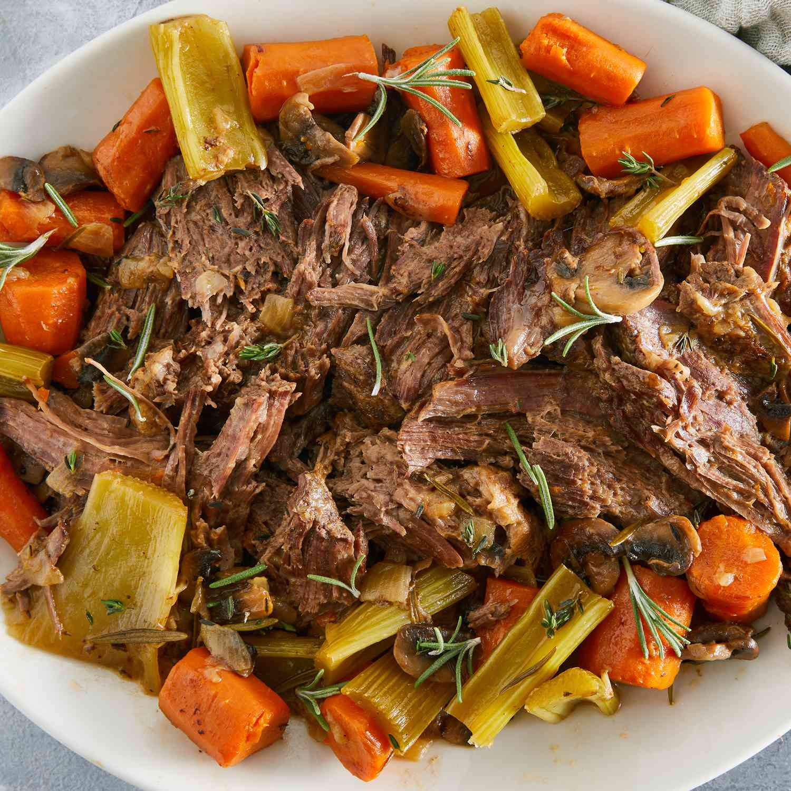

Pot Roast

Instructions For Making The Perfect Pot Roast
This delicious recipe will impress your family and will quickly become a favorite for everyone. These simple wholesome ingredients
come together to make the perfect meal.
Ingredients
- 5lbs chuck roast
- 1 yellow onion chopped
- 1 tsp garlic powder
- 1 tsp onion powder
- 1 tsp salt
- 1/2 tsp ground pepper
- 2lbs potatoes
- 4 cups beef broth
- 1 tbsp worcestershire sauce
Steps
- Preheat slow cooker to medium heat
- Mix dry ingredients together then rub on exterior of roast
- Brown roast for 4-5 mins
- Add all ingredients to slow cooker
- Cook for 5 hours until fork tender